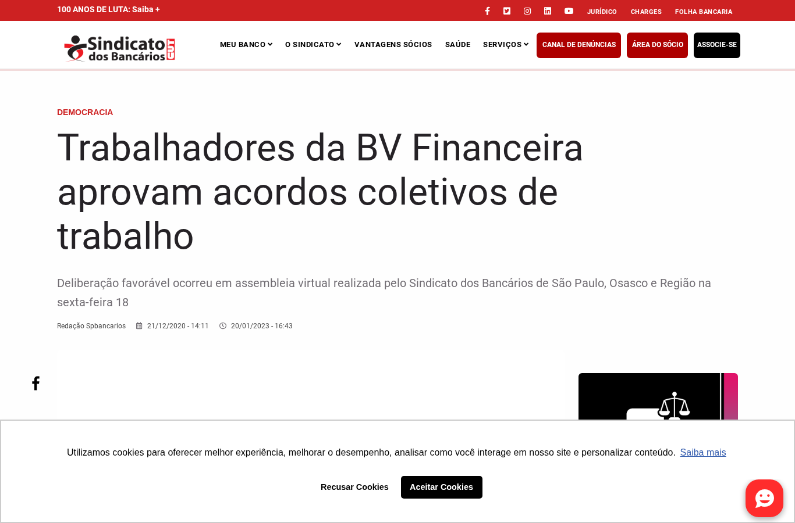
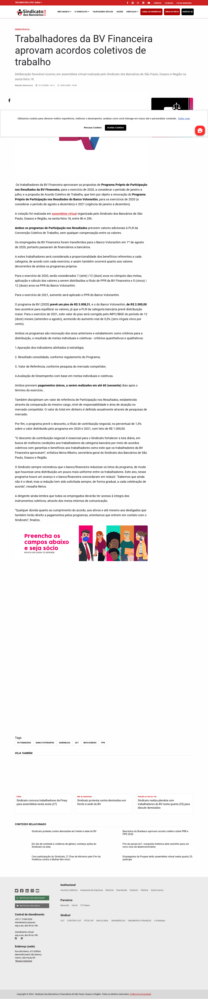

Sistema de Investigação de Marca e Identidade Online
https://spbancarios.com.br/12/2020/trabalhadores-da-bv-financeira-aprovam-acordos-coletivos-de-trabalho
Prioridade: HIGH · Cenário: B_AMBIGUOUS_COMMUNICATION · Revisão humana: PENDING
Página identificada como matéria editorial e sindical publicada pelo Sindicato dos Bancários de SP. Conforme as diretrizes de triagem de escopo do SIMIO, veículos de imprensa, entidades sindicais e portais informativos sem atuação na comercialização ou intermediação de crédito estão fora do escopo da Resolução CMN nº 4.935/2021, justificando o enquadramento como NOT_RELEVANT com classificação NO_INDICATION e prioridade LOW. [Revisor: DOWNGRADE] A publicação analisada é de caráter puramente jornalístico e sindical mantida pelo Sindicato dos Bancários de SP, tratando de acordos coletivos de trabalho de trabalhadores do Banco Votorantim/BV Financeira. Por não configurar atuação comercial ou correspondente bancário ofertando produtos financeiros, aplica-se o downgrade direto para NO_INDICATION com prioridade LOW.


| Ref | Tipo | Local | Conteúdo |
|---|---|---|---|
| E-URL | domain | url | URL final: https://spbancarios.com.br/12/2020/trabalhadores-da-bv-financeira-aprovam-acordos-coletivos-de-trabalho (domínio: spbancarios.com.br) |
| E-DISC-001 | text | search_index | Índice de busca (lens): Trabalhadores da BV Financeira aprovam acordos coletivos de ... — Imagem visualmente semelhante ao logotipo antigo (fonte: Sindicato dos Bancários) |
| E-SHOT-VIEWPORT | screenshot | viewport | evidence/C0a32941143/attempt-2/viewport.png (sha256 69ed6ba77cd0825a…) |
| E-SHOT-FULL | screenshot | page | evidence/C0a32941143/attempt-2/fullpage.png (sha256 9ccdebadb60dcf67…) |
| E-TITLE | title | head | Trabalhadores da BV Financeira aprovam acordos coletivos de trabalho | Sindicato dos Bancários |
| E-META-1 | meta | head | description: Os trabalhadores da BV Financeira aprovaram as propostas de Programa Próprio de Participação nos Resultados da BV Financeira, para o exercício de 2020, a considerar o período de janeiro a julho; e a proposta de Acordo Coletivo de Trabalho, que tem por objeto a renovação do Programa Próprio de Participação nos Resultados do Banco Votorantim, para os exercícios de 2020 (a considerar o período de agosto a dezembro) e 2021 (vigência de janeiro a dezembro). |
| E-META-2 | meta | head | og:site_name: Sindicato dos Bancários de SP |
| E-META-3 | meta | head | og:title: Trabalhadores da BV Financeira aprovam acordos coletivos de trabalho |
| E-META-4 | meta | head | og:description: Os trabalhadores da BV Financeira aprovaram as propostas de Programa Próprio de Participação nos Resultados da BV Financeira, para o exercício de 2020, a considerar o período de janeiro a julho; e a proposta de Acordo Coletivo de Trabalho, que tem por objeto a renovação do Programa Próprio de Participação nos Resultados do Banco Votorantim, para os exercícios de 2020 (a considerar o período de agosto a dezembro) e 2021 (vigência de janeiro a dezembro). |
| E-CANONICAL | meta | head | https://spbancarios.com.br/12/2020/trabalhadores-da-bv-financeira-aprovam-acordos-coletivos-de-trabalho |
| E-HEAD-1 | heading | page | MAIN NAVIGATION |
| E-HEAD-2 | heading | page | Trabalhadores da BV Financeira aprovam acordos coletivos de trabalho |
| E-HEAD-3 | heading | page | VEJA TAMBÉM |
| E-HEAD-4 | heading | page | Sindicato convoca trabalhadores da Finep para assembleia nesta sexta (27) |
| E-HEAD-5 | heading | page | Sindicato protesta contra demissões em frente à sede do BV |
| E-HEAD-6 | heading | page | Sindicato realiza plenária com trabalhadores do BV nesta quarta (25) para discutir demissões |
| E-HEAD-7 | heading | page | CONTEÚDO RELACIONADO |
| E-HEAD-8 | heading | page | Central de Atendimento |
| E-HEAD-9 | heading | page | Endereço (sede) |
| E-HEAD-10 | heading | page | Institucional |
| E-HEAD-11 | heading | page | Parceiros |
| E-HEAD-12 | heading | page | Sindical |
| E-HDR | text | header | 100 ANOS DE LUTA: Saiba + JURÍDICO CHARGES FOLHA BANCARIA MAIN NAVIGATION MEU BANCO O SINDICATO VANTAGENS SÓCIOS SAÚDE SERVIÇOS CANAL DE DENÚNCIAS ÁREA DO SÓCIO ASSOCIE-SE |
| E-FOLD | text | viewport (acima da dobra) | Saiba mais Recusar Cookies Aceitar Cookies Pular para o conteúdo principal 100 ANOS DE LUTA : Saiba + Jurídico Charges Folha Bancaria Main navigation Meu Banco O Sindicato Vantagens Sócios Saúde Serviços Canal de Denúncias área do sócio Associe-se Chapéu Democracia Trabalhadores da BV Financeira aprovam acordos coletivos de trabalho Linha fina Deliberação favorável ocorreu em assembleia virtual realizada pelo Sindicato dos Bancários de São Paulo, Osasco e Região na sexta-feira 18 Redação Spbancarios 21/12/2020 - 14:11 20/01/2023 - 16:43 Opens in a new window Opens in a new window Opens in a new window Opens in a new window Imagem Destaque |
| E-FTR | text | footer | NOTÍCIAS POR WHATSAPP NOTÍCIAS POR EMAIL Central de Atendimento +55 11 3188-5200 Atendimento pessoal: seg a sex, das 9h às 18h. Atendimento virtual: seg a sex, das 9h às 18h. Endereço (sede) Rua São Bento, 413 Edifício Martinelli (metrô São Bento), Centro, São Paulo/SP. Nossas regionais Institucional Acordos Coletivos Assessoria de Imprensa Diretoria Downloads Estatuto História Quem somos Parceiros Bancredi Cine B TVT News Sindical CUT CONTRAF-CUT FETEC-SP UNI-GLOBAL UNIAMERICAS UNIAMERICA FINANÇAS + Entidades Copyright © 2024 - Sindicato dos Bancários e Financiários de São Paulo, Osasco e Região. Todos os direitos reservados. Política de privacidade |
| E-NAV | nav | header | 100 ANOS DE LUTA: Saiba + <https://100anos.spbancarios.com.br/> | link para a página do Sindicato no facebook <https://www.facebook.com/SPBancarios> | link para a página do Sindicato no Twitter <https://twitter.com/spbancarios> | link para a página do Sindicato no Instagram <https://www.instagram.com/spbancarios/> | link para a página do Sindicato no Linkedin <https://www.linkedin.com/company/sindicato-dos-banc%C3%A1rios-de-s%C3%A3o-paulos-osasco-e-regi%C3%A3o> | link para a página do Sindicato no Youtube <https://www.youtube.com/user/spbancarios> | JURÍDICO <https://spbancarios.com.br/juridico> | CHARGES <https://spbancarios.com.br/charges> | FOLHA BANCARIA <https://spbancarios.com.br/folhabancaria> | Início <https://spbancarios.com.br/> | VANTAGENS SÓCIOS <https://spbancarios.com.br/sejasocio> | SAÚDE <https://spbancarios.com.br/saude> | CANAL DE DENÚNCIAS <https://spbancarios.com.br/canal-de-denuncias> | ÁREA DO SÓCIO <https://socio.spbancarios.com.br/> | ASSOCIE-SE <https://lp.spbancarios.com.br/saiba-mais/> |
| E-CTA-1 | cta | page | Saiba mais <https://spbancarios.com.br/politica-de-privacidade> |
| E-CTA-2 | cta | page | Recusar Cookies |
| E-CTA-3 | cta | page | Aceitar Cookies |
| E-CTA-4 | cta | header | MEU BANCO |
| E-CTA-5 | cta | header | O SINDICATO |
| E-CTA-6 | cta | header | SERVIÇOS |
| E-CTA-7 | cta | header | CANAL DE DENÚNCIAS <https://spbancarios.com.br/canal-de-denuncias> |
| E-CTA-8 | cta | header | ÁREA DO SÓCIO <https://socio.spbancarios.com.br/> |
| E-CTA-9 | cta | header | ASSOCIE-SE <https://lp.spbancarios.com.br/saiba-mais/> |
| E-CTA-10 | cta | page | Opens in a new window <https://www.facebook.com/sharer/sharer.php?u=https://spbancarios.com.br/12/2020/trabalhadores-da-bv-financeira-aprovam-acordos-coletivos-de-trabalho&title=Trabalhadores%20da%20BV%20Financeira%20aprovam%20acordos%20coletivos%20de%20trabalho> |
| E-CTA-11 | cta | page | Opens in a new window <https://twitter.com/intent/tweet?text=Trabalhadores%20da%20BV%20Financeira%20aprovam%20acordos%20coletivos%20de%20trabalho+https://spbancarios.com.br/12/2020/trabalhadores-da-bv-financeira-aprovam-acordos-coletivos-de-trabalho> |
| E-CTA-12 | cta | page | Opens in a new window <https://wa.me/?text=https://spbancarios.com.br/12/2020/trabalhadores-da-bv-financeira-aprovam-acordos-coletivos-de-trabalho> |
| E-CTA-13 | cta | page | Opens in a new window <https://www.linkedin.com/sharing/share-offsite/?url=https://spbancarios.com.br/12/2020/trabalhadores-da-bv-financeira-aprovam-acordos-coletivos-de-trabalho> |
| E-CTA-14 | cta | footer | NOTÍCIAS POR WHATSAPP <https://api.whatsapp.com/send?phone=5511910244938&text=Ol%C3%A1!%20Gostaria%20de%20falar%20sobre%20...> |
| E-CTA-15 | cta | footer | NOTÍCIAS POR EMAIL <https://materiais.spbancarios.com.br/cadastro> |
| E-CONTACT-1 | contact | header | link para a página do Sindicato no facebook <https://www.facebook.com/SPBancarios> |
| E-CONTACT-2 | contact | header | link para a página do Sindicato no Instagram <https://www.instagram.com/spbancarios/> |
| E-CONTACT-3 | contact | page | Opens in a new window <https://www.facebook.com/sharer/sharer.php?u=https://spbancarios.com.br/12/2020/trabalhadores-da-bv-financeira-aprovam-acordos-coletivos-de-trabalho&title=Trabalhadores%20da%20BV%20Financeira%20aprovam%20acordos%20coletivos%20de%20trabalho> |
| E-CONTACT-4 | contact | page | Opens in a new window <https://wa.me/?text=https://spbancarios.com.br/12/2020/trabalhadores-da-bv-financeira-aprovam-acordos-coletivos-de-trabalho> |
| E-CONTACT-5 | contact | page | Opens in a new window <https://www.facebook.com/sharer/sharer.php?u=https://spbancarios.com.br/12/2020/trabalhadores-da-bv-financeira-aprovam-acordos-coletivos-de-trabalho&title=Trabalhadores%20da%20BV%20Financeira%20aprovam%20acordos%20coletivos%20de%20trabalho> |
| E-CONTACT-6 | contact | page | Opens in a new window <https://wa.me/?text=https://spbancarios.com.br/12/2020/trabalhadores-da-bv-financeira-aprovam-acordos-coletivos-de-trabalho> |
| E-CONTACT-7 | contact | footer | <https://www.facebook.com/spbancarios/> |
| E-CONTACT-8 | contact | footer | <https://www.instagram.com/spbancarios/> |
| E-CONTACT-9 | contact | footer | NOTÍCIAS POR WHATSAPP <https://api.whatsapp.com/send?phone=5511910244938&text=Ol%C3%A1!%20Gostaria%20de%20falar%20sobre%20...> |
| E-CONTACT-10 | contact | footer | <tel:01131885200> |
| E-IMG-1 | image | header (acima da dobra) | imagem alt='Início' src=https://spbancarios.com.br/sites/default/files/logo-nova-sindicato_0.png (200x49, acima da dobra) |
| E-IMG-2 | image | page (acima da dobra) | imagem alt='' src=https://spbancarios.com.br/sites/default/files/styles/interna_grande/public/destaques/bv-financeira.png?itok=KRPjVLv6 (872x545, acima da dobra) |
| E-IMG-3 | image | page | imagem alt='Com faixas e cartazes, dirigentes do Sindicato protestam em frente à sede do BV' src=https://spbancarios.com.br/sites/default/files/styles/medium/public/destaques/2026-11/WhatsApp%20Image%202026-11-24%20at%2018.18.51.jpeg.webp?itok=Zh_sA3n- (374x234, abaixo da dobra) |
| E-IMG-4 | image | page | imagem alt='Sindicato realiza plenária com trabalhadores do BV nesta quarta (25) para discutir demissões' src=https://spbancarios.com.br/sites/default/files/styles/medium/public/destaques/2026-11/reuni%C3%A3o-virtual-bv.jpg.webp?itok=SstNNv9r (374x234, abaixo da dobra) |
| E-IMG-5 | image | page | imagem alt='Com faixas e cartazes, dirigentes do Sindicato protestam em frente à sede do BV' src=https://spbancarios.com.br/sites/default/files/styles/seeb_thumb/public/destaques/2026-11/WhatsApp%20Image%202026-11-24%20at%2018.18.51.jpeg.webp?itok=myEknU5N (100x63, abaixo da dobra) |
| E-IMG-6 | image | page | imagem alt='Blocos vermelhos com as siglas PRB e PPR sobre uma mesa, com o logotipo do Bradesco ao fundo, ilustrando a aprovação do acordo coletivo sobre os programas de participação nos resultados de 2026.' src=https://spbancarios.com.br/sites/default/files/styles/seeb_thumb/public/destaques/2026-11/Blocos%20PRB%20e%20PPR%20no%20Bradesco.png.webp?itok=vWQeUBea (100x63, abaixo da dobra) |
| E-IMG-7 | image | footer | imagem alt='Sindicato dos bancários de SP, Osasco e Região' src=https://spbancarios.com.br/sites/default/files/logo-sindicato-dos-bancarios-sp_2.png (200x27, abaixo da dobra) |
| E-TXT-001 | text | page | MEU BANCO |
| E-TXT-002 | text | page | Trabalhadores da BV Financeira aprovam acordos coletivos de trabalho |
| E-TXT-003 | text | page | Os trabalhadores da BV Financeira aprovaram as propostas de Programa Próprio de Participação nos Resultados da BV Financeira, para o exercício de 2020, a considerar o período de janeiro a julho; e a proposta de Acordo Coletivo de Trabalho, que tem por objeto a renovação do Programa Próprio de Participação nos Resultados do Banco Votorantim, para os exercícios de 2020 (a considerar o período de |
| E-TXT-004 | text | page | Os empregados da BV Financeira foram transferidos para o Banco Votorantim em 1º de agosto de 2020, portanto passaram de financiários a bancários. |
| E-TXT-005 | text | page | Para o exercício de 2020, serão considerados 7 (sete) /12 (doze) avos no cômputo das metas, aplicação e cálculo dos valores a serem distribuídos a título de PPR da BV Financeira e 5 (cinco) / 12 (doze) avos na PPR do Banco Votorantim. |
| E-TXT-006 | text | page | Para o exercício de 2021, somente será aplicado o PPR do Banco Votorantim. |
| E-TXT-007 | text | page | O programa da BV (2020) prevê um piso de R$ 3.008,31, e o do Banco Votorantim, de R$ 2.000,00. Isso acontece para equilibrar os valores, já que a PLR da categoria bancária prevê distribuição maior. Para o exercício de 2021, este valor do piso será corrigido pelo INPC/IBGE do período de 12 (doze) meses (setembro a agosto), acrescido do aumento real de 0,5% (zero vírgula cinco por cento). |
| E-TXT-008 | text | page | “O desconto da contribuição negocial é essencial para o Sindicato fortalecer a luta diária, em busca de melhores condições aos trabalhadores da categoria bancária por meio de acordos coletivos com garantias e benefícios aos trabalhadores como este que os trabalhadores da BV Financeira aprovaram”, enfatiza Neiva Ribeiro, secretária-geral do Sindicato dos Bancários de São Paulo, Osasco e Região. |
| E-TXT-009 | text | page | O Sindicato sempre reivindicou que o banco/financeira reduzisse os tetos do programa, de modo que houvesse uma distribuição um pouco mais uniforme entre os trabalhadores. Este ano, nesse programa houve um avanço e o banco/financeira concordaram em reduzir. "Sabemos que ainda não é o ideal, mas a redução tem sido solicitada sempre, de forma gradual, a cada celebração de acordo", ressalta Neiva. |
| E-TXT-010 | text | page | BV FINANCEIRA |
| E-TXT-011 | text | page | BANCO VOTORANTIM |
| E-TXT-012 | text | page | Sindicato protesta contra demissões em frente à sede do BV |
| E-TXT-013 | text | page | Sindicato realiza plenária com trabalhadores do BV nesta quarta (25) para discutir demissões |
| E-TXT-014 | text | page | Sindicato protesta contra demissões em frente à sede do BV |
| E-TXT-015 | text | page | NOTÍCIAS POR WHATSAPP NOTÍCIAS POR EMAIL |
| E-TXT-016 | text | page | Central de Atendimento |
| E-TXT-017 | text | page | Atendimento pessoal: |
| E-TXT-018 | text | page | Atendimento virtual: |
| E-TXT-019 | text | page | Endereço (sede) |
| E-TXT-020 | text | page | Parceiros |
| Dimensão | Sinal | Achado | Refs |
|---|---|---|---|
| DECLARED_COMMERCIAL_IDENTITY | LEGITIMATE | O portal pertence legitimamente ao Sindicato dos Bancários e Financiários de São Paulo, Osasco e Região (spbancarios.com.br), não se tratando de correspondente bancário ou entidade comercial ofertando crédito. | E-URL E-TITLE E-HDR E-FTR |
| CORRESPONDENT_TRANSPARENCY | NEUTRAL | A página é uma matéria jornalística/sindical sobre acordos coletivos de trabalho de empregados do conglomerado BV, estando fora do escopo de auditoria da Resolução CMN nº 4.935/2021. | E-TXT-002 E-TXT-003 E-TXT-004 |
| LOGO_USAGE | NEUTRAL | A imagem ilustrativa da reportagem apresenta logotipo antigo da BV Financeira em contexto estritamente editorial/noticioso de 2020. | E-IMG-2 E-SHOT-FULL |
Página identificada como matéria editorial e sindical publicada pelo Sindicato dos Bancários de SP. Conforme as diretrizes de triagem de escopo do SIMIO, veículos de imprensa, entidades sindicais e portais informativos sem atuação na comercialização ou intermediação de crédito estão fora do escopo da Resolução CMN nº 4.935/2021, justificando o enquadramento como NOT_RELEVANT com classificação NO_INDICATION e prioridade LOW.
Nenhum CNPJ ou razão social identificáveis no conteúdo coletado.
| Tipo | Valor | Ref | Contexto |
|---|---|---|---|
| domain | spbancarios.com.br | E-URL | |
| social_profile | https://www.facebook.com/SPBancarios | E-NAV | |
| social_profile | https://www.instagram.com/spbancarios/ | E-NAV | |
| social_profile | https://www.linkedin.com/company/sindicato-dos-banc%C3%A1rios-de-s%C3%A3o-paulos-osasco-e-regi%C3%A3o | E-NAV | |
| social_profile | https://www.youtube.com/user/spbancarios | E-NAV | |
| social_profile | https://www.facebook.com/sharer/sharer.php?u=https://spbancarios.com.br/12/2020/trabalhadores-da-bv-financeira-aprovam-acordos-coletivos-de-trabalho&title=Trabalhadores%20da%20BV%20Financeira%20aprova | E-CTA-10 | |
| social_profile | https://www.linkedin.com/sharing/share-offsite/?url=https://spbancarios.com.br/12/2020/trabalhadores-da-bv-financeira-aprovam-acordos-coletivos-de-trabalho | E-CTA-13 | |
| social_profile | https://www.facebook.com/spbancarios/ | E-CONTACT-7 | |
| trade_name | Sindicato dos Bancários de SP | E-META-2 | |
| phone | 11 3188-5200 | E-FTR | |
| Opens in a new window <https://wa.me/?text=https://spbancarios.com.br/12/2020/trabalhadores-da-bv-financeira-aprovam-acordos-coletivos-de-trabalho> | E-CONTACT-4 | ||
| NOTÍCIAS POR WHATSAPP <https://api.whatsapp.com/send?phone=5511910244938&text=Ol%C3%A1!%20Gostaria%20de%20falar%20sobre%20...> | E-CONTACT-9 |
Mapeamento indicativo para apoio à auditoria. Não constitui conclusão regulatória; a decisão definitiva pertence à auditoria.
Fonte: NORMATIVE
Art. 14. O contrato de correspondente deve estabelecer: [...] II - vedação à utilização, pelo contratado, de logomarca ou de outros atributos que sejam similares aos adotados pela instituição contratante em suas agências, postos de atendimento, sítio eletrônico na internet, aplicativo ou outras plataformas de comunicação em rede;
Hipótese: Uso de logomarca, uso excessivo/desproporcional ou de atributos similares aos adotados pela contratante em seus canais. A norma disciplina correspondentes contratados; o responsável não foi identificado como correspondente.
Evidência observada: E-IMG-1 E-IMG-2 E-IMG-3
Informação faltante:
Fonte: NORMATIVE
Art. 14. O contrato de correspondente deve estabelecer: [...] III - divulgação ao público, pelo contratado, de sua condição de prestador de serviços à instituição contratante, identificada pelo nome com que é conhecida no mercado, com descrição dos produtos e serviços oferecidos e canais de contato da instituição contratante, inclusive de sua ouvidoria, em local visível, em destaque e em formato legível, por meio de: a) sítio eletrônico do correspondente na internet, acessível na página inicial; b) aplicativo e outras plataformas de comunicação em rede do correspondente; [...]
Hipótese: Há declaração da condição de correspondente/prestador, mas outros elementos da página (DECLARED_COMMERCIAL_IDENTITY, CONTACT_CHANNELS) podem contradizê-la ou reduzir seu efeito (destaque, legibilidade e identificação da contratante a verificar). A norma disciplina correspondentes contratados; o responsável não foi identificado como correspondente.
Evidência observada: E-CONTACT-4 E-CONTACT-6 E-CONTACT-9 E-FOLD E-FTR E-TITLE
Informação faltante:
Fonte: NORMATIVE
Art. 3º O correspondente atua por conta e sob as diretrizes da instituição contratante, que assume inteira responsabilidade pelo atendimento prestado aos clientes e usuários por meio do contratado.
Hipótese: Atendimento ao público prestado por meio do contratado em condições que podem não seguir as diretrizes da contratante. A norma disciplina correspondentes contratados; o responsável não foi identificado como correspondente.
Evidência observada: E-CONTACT-4 E-CONTACT-6 E-CONTACT-9
Informação faltante:
Se o responsável não for correspondente contratado, os indícios podem caracterizar uso indevido de marca ou fraude, fora do escopo da Res. 4.935: avaliar encaminhamento às áreas jurídica/segurança.
Limitações: requisitos contratuais/internos não fornecidos: mapeamento limitado ao texto normativo
Decisão: DOWNGRADE → NO_INDICATION / LOW
A publicação analisada é de caráter puramente jornalístico e sindical mantida pelo Sindicato dos Bancários de SP, tratando de acordos coletivos de trabalho de trabalhadores do Banco Votorantim/BV Financeira. Por não configurar atuação comercial ou correspondente bancário ofertando produtos financeiros, aplica-se o downgrade direto para NO_INDICATION com prioridade LOW.
| Tema | Severidade | Questionamento | Refs |
|---|---|---|---|
| CLASSIFICATION_DISCREPANCY | HIGH | A página pertence ao Sindicato dos Bancários e Financiários de São Paulo (spbancarios.com.br) e veicula notícia editorial de cunho exclusivamente sindical sobre acordos coletivos. Não se trata de correspondente bancário (COBAN), revenda de veículos, integrador solar ou promotora de crédito, estando fora do escopo de investigação de irregularidades regulatórias da marca BV. | E-URL E-TITLE E-HDR E-FTR E-SHOT-VIEWPORT E-SHOT-FULL |
| domain_attribution | MEDIUM | Responsável pela página não identificado; a conclusão sobre a marca não pode ser atribuída a um estabelecimento específico. | E-URL |
| Fonte | Consulta / hipótese | URL original | Título / trecho |
|---|---|---|---|
| lens | https://logospng.org/wp-content/uploads/bv-financeira.png H12-legacy-logo:lens | https://spbancarios.com.br/12/2020/trabalhadores-da-bv-financeira-aprovam-acordos-coletivos-de-trabalho | Trabalhadores da BV Financeira aprovam acordos coletivos de ... Imagem visualmente semelhante ao logotipo antigo (fonte: Sindicato dos Bancários) |
Original: https://spbancarios.com.br/12/2020/trabalhadores-da-bv-financeira-aprovam-acordos-coletivos-de-trabalho
Final: https://spbancarios.com.br/12/2020/trabalhadores-da-bv-financeira-aprovam-acordos-coletivos-de-trabalho
| Artefato | Caminho | SHA-256 | Bytes |
|---|---|---|---|
| screenshot_viewport | evidence/C0a32941143/attempt-2/viewport.png | 69ed6ba77cd0825afab3ac2eb52c9c0e229ca9a63b9064907e522fd8a167cdb9 | 88003 |
| screenshot_full | evidence/C0a32941143/attempt-2/fullpage.png | 9ccdebadb60dcf67de981185c489a72a3fbca0e69fbc69a93b3bafa17fddbbc4 | 541557 |
| html | evidence/C0a32941143/attempt-2/page.html.txt | f6302ac8bf74ef1d489a6f2d17ae11e82c233db5d7fce437ecffe10fbfeebeff | 191159 |
| text | evidence/C0a32941143/attempt-2/text.txt | 8c9edd9648dca3cbfc6156663bee97c583bd9c975f22d2b52f77093f85b95084 | 6653 |
| page_data | evidence/C0a32941143/attempt-2/page.json | 5c8e1508aed5cb8e9126f58cfc2b10af002aceb0a1162a71e5cff077a6b0d500 | 36005 |
| Quando | De | Para | Nota |
|---|---|---|---|
| 2026-11-25T20:48:28+00:00 | DISCOVERED | QUEUED | prioritised (score 4.0) |
| 2026-11-25T20:48:35+00:00 | QUEUED | COLLECTING | |
| 2026-11-25T20:48:42+00:00 | COLLECTING | COLLECTED | |
| 2026-11-25T20:48:42+00:00 | COLLECTED | ANALYZING | |
| 2026-11-25T20:48:42+00:00 | ANALYZING | COLLECTED | prepare error, retry 1: UnboundLocalError |
| 2026-11-25T20:48:44+00:00 | COLLECTED | ANALYZING | |
| 2026-11-25T20:48:45+00:00 | ANALYZING | COLLECTED | prepare error, retry 2: UnboundLocalError |
| 2026-11-25T20:48:49+00:00 | COLLECTED | ANALYZING | |
| 2026-11-25T20:48:50+00:00 | ANALYZING | FAILED | prepare failed: UnboundLocalError: cannot access local variable 'is_disc' where it is not associated with a value |
| 2026-11-25T20:58:33+00:00 | FAILED | QUEUED | retry requested by operator |
| 2026-11-25T20:58:35+00:00 | QUEUED | COLLECTING | |
| 2026-11-25T20:58:45+00:00 | COLLECTING | COLLECTED | |
| 2026-11-25T20:58:45+00:00 | COLLECTED | ANALYZING | |
| 2026-11-25T20:59:00+00:00 | ANALYZING | REVIEWING | |
| 2026-11-25T20:59:09+00:00 | REVIEWING | COMPLETED |